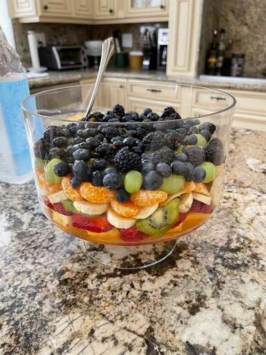

Summer Fruit Salad

Description
This pizza uses the usual red sauce—a unique and healthy pizza for those bored with the traditional. Top with your favorite veggies and cheese.
Ingredients
Sauce:
- ⅔ cup fresh orange juice
- ⅓ cup fresh lemon juice
- ⅓ cup packed brown sugar
- ½ teaspoon grated orange zest
- ½ teaspoon grated lemon zest
- 1 teaspoon vanilla extract
Salad:
- 2 cups cubed fresh pineapple
- 2 cups strawberries, hulled and sliced
- 3 kiwi fruit, peeled and sliced
- 3 bananas, sliced
- 2 oranges, peeled and sectioned
Steps
- For the sauce: Bring orange juice, lemon juice, brown sugar, orange zest, and lemon zest to a boil in a saucepan over medium-high heat. Reduce heat to medium-low and simmer until slightly thickened, about 5 minutes. Remove from heat and stir in vanilla extract. Set aside to cool.
- For the salad: Layer fruit in a large, clear glass bowl in this order: pineapple, strawberries, kiwi fruit, bananas, oranges, grapes, and blueberries. Pour cooled sauce over fruit; cover and refrigerate for 3 to 4 hours before serving.